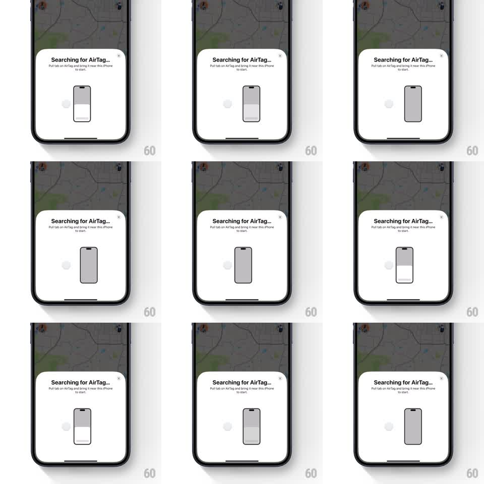

Media
Frame-by-frame

Rebuild this animation 1:1: Apple Find My's AirTag pairing sheet - a bottom sheet over the dimmed map shows a pulsing iPhone illustration while "Searching for AirTag..." holds, and the sheet slides away on close.

Rebuild this animation 1:1: Apple Find My's AirTag pairing sheet - a bottom sheet over the dimmed map shows a pulsing iPhone illustration while "Searching for AirTag..." holds, and the sheet slides away on close. ## Integration Integration: stack-agnostic spec - springs given as stiffness/damping, timed motions as duration + curve; map every value to your framework and animation library of choice. ## Scene Dimmed map screen with a card sheet pinned to the bottom: "Searching for AirTag..." title, instruction copy, a close button, and an iPhone illustration at center. ## Motion spec Pattern: searching pulse loop, ~2s. - Inside the iPhone illustration, a white fill sweeps upward through the phone body (600ms, ease-in-out), like a scanning level, then drains (400ms), repeating. - A soft gray dot to the phone's left pulses (scale 1 to 1.3 and back, 1s, ease-in-out) offset from the fill sweep so the two motions interleave. - Title's ellipsis animates through one, two, three dots on a 1.2s cycle. - On close, the whole sheet slides down off screen (350ms, ease-in) and the map undims (250ms). ## Calibration - The fill sweep is clipped to the phone silhouette - any spill outside the outline reads as a rendering bug. - The two loops must not sync up; offset periods keep the search feeling active. ## Reduced motion Static illustration; ellipsis holds at three dots; sheet still slides on close. ## Don't miss - The map stays live and pannable behind the sheet - it is dimmed, not frozen. - The sheet's slide-down dismissal reuses the system sheet curve, no custom spring.